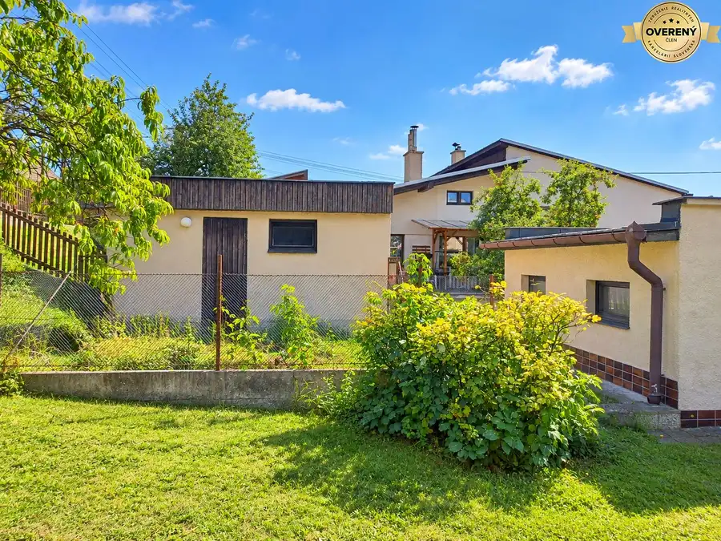
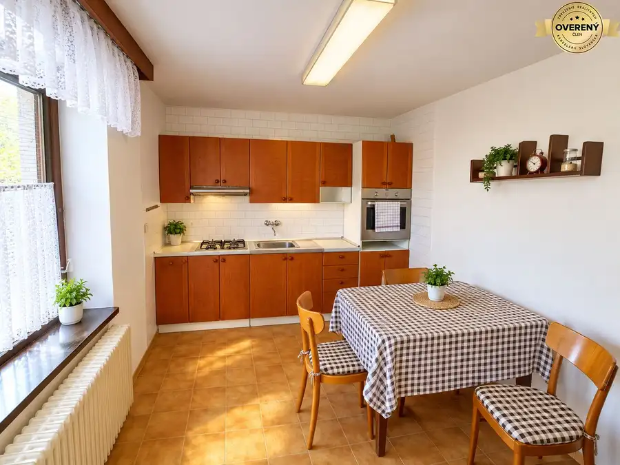
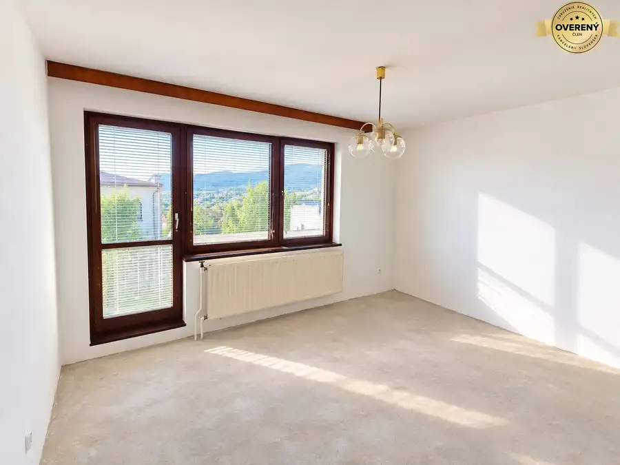
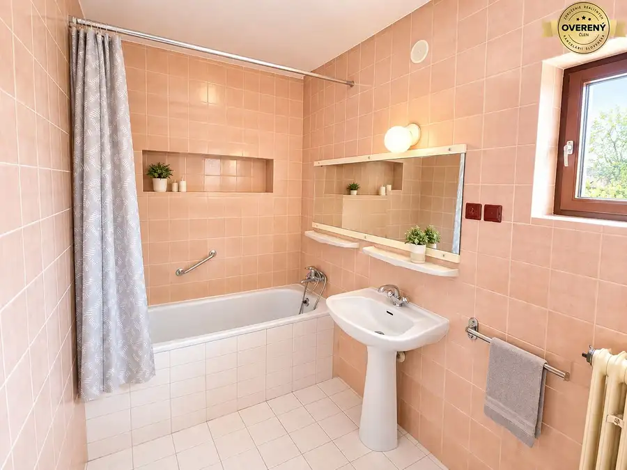

Priestranný rodinný dom v tichom prostredí obce LIPOVEC
Lipovec





- Dispozícia4-izbový
- Plocha320 m²
- Poschodie0. z 3
- Stavpôvodný
- Vlastníctvoosobné
O nehnuteľnosti
Ponúkame Vám na predaj priestranný rodinný dom v obci Lipovec, ktorý zaujme najmä veľkorysým priestorom, praktickou dispozíciou a možnosťou ďalšieho rozšírenia. Dom bol postavený v 90. rokoch pre vlastnú rodinu a počas rokov bol priebežne udržiavaný a čiastočne rekonštruovaný.
Už pri vstupe Vás privíta veľká vstupná hala, z ktorej sa dostanete do kuchyne, obývacej izby a kúpeľne. Hala zároveň prepája jednotlivé podlažia domu – vedie z nej schodisko do pivnice aj na poschodie.
Celý dom je podpivničený, čo poskytuje množstvo úložného a praktického priestoru. V suteréne sa nachádzajú rozsiahle skladové priestory, kotolňa, práčovňa a dokonca aj samostatná kuchynka.
Na druhom nadzemnom podlaží sa nachádzajú tri izby, kúpeľňa a balkón, na ktorý je prístup z dvoch izieb. Dispozícia tak ponúka dostatok priestoru aj pre väčšiu rodinu.
Veľkou výhodou nehnuteľnosti je samostatne stojaca garáž pre jedno osobné vozidlo, vybavená montážnou jamou. Garáž bola zároveň konštrukčne a staticky pripravená tak, aby bolo možné na jej streche v budúcnosti vybudovať ďalšiu obytnú miestnosť s priamym vstupom z chodby druhého podlažia domu. Nehnuteľnosť tak ponúka zaujímavý potenciál na ďalšie rozšírenie podľa potrieb nového majiteľa.
Dom je napojený na verejný vodovod, kanalizáciu, elektrickú sieť 3F / 400 V a internet. Vykurovanie je ústredné, zabezpečené kotlom na pevné palivo, ktorý bol vymenený približne pred 7 rokmi, a zároveň je k dispozícii aj kotol na elektrickú energiu.
K domu patrí záhrada s ovocnými drevinami a záhradným domčekom, ktorý pôvodne slúžil ako kurín. Záhrada poskytuje priestor na oddych, pestovanie či vytvorenie príjemného zázemia pre celú rodinu.
Pokojná lokalita s výbornou dostupnosťou
Dom sa nachádza v tichej a pokojnej časti obce Lipovec. V pešej dostupnosti, len niekoľko minút od domu, sa nachádza obchod a materská škola.
Výhodou lokality je zároveň dobrá dostupnosť do Martina, ktorý ponúka kompletnú občiansku vybavenosť. Zaujímavá je aj dostupnosť do Žiliny, kam sa v súčasnosti autom dostanete približne za 15 minút.
Dom bol postavený stavebníkom pre vlastnú rodinu, pričom jeho kvalitu preverili desaťročia užívania. Nehnuteľnosť je voľná ihneď a obývateľná po vykonaní drobných úprav. Zároveň ponúka priestor pre nového majiteľa, ktorý si ju môže postupne prispôsobiť podľa vlastných predstáv.
Ak hľadáte priestranný rodinný dom v pokojnej lokalite, s veľkým množstvom úložného priestoru, záhradou, garážou a navyše s možnosťou ďalšieho rozšírenia, táto nehnuteľnosť určite stojí za pozornosť. Stavba spĺňa podmienky aj na to, aby ste rekonštrukciu financovali aj cez energopomoc.
Odporúčame osobnú obhliadku. Možno práve tu nájdete nový domov pre svoju rodinu.
V prípade seriózneho záujmu a prístupu je možné dojednať zľavu z kúpnej ceny.
Financovanie kúpy prostredníctvom hypotekárneho úveru Vám radi zabezpečíme.
Parametre
- Rozloha pozemku
- 558 m²
- Zastavaná plocha
- 120 m²
- Úžitková plocha
- 320 m²
- Poschodie
- prízemie
- Počet poschodí
- 3
- Počet izieb
- 4
- Vlastníctvo
- osobné
- Stav
- pôvodný
- Status
- aktívne
- Odvoz odpadu
- áno
- Voda
- verejný vodovod
- El. napätie
- 230/400V
- Plyn
- nie
- Kanalizácia
- áno
- Internet
- telefónna linka
- Kúpeľňa
- vaňa
- Vykurovanie
- vlastné – kombinované
- Balkón
- áno - 1
- Garáž
- áno - 1 auto
- Inžinierske siete
- áno
- Postavené z
- tehla
- Zariadenie
- nezariadený
- Zateplený objekt
- nie
- Strecha
- pôvodná
- Káblová televízia
- áno
- Okná
- drevené
- Terén
- mierny svah
- Prístupová cesta
- asfaltová cesta
- Dátum zverejnenia
- 2026-09-15